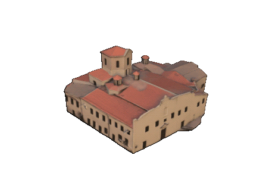

Chiesa di Santa Maria degli Angeli

I caccamesi la chiamano ancora "San Domenico", dal nome della piazza. Fu fondata nel 1487 dal frate domenicano Giovanni Liccio, nato proprio a Caccamo — secondo la tradizione, fu la Madonna stessa a indicargli in sogno dove costruirla. Oggi la chiesa custodisce le sue reliquie in un'urna d'argento, insieme a una Madonna col Bambino scolpita nel 1516 da Antonello Gagini. È lo stesso Beato Giovanni che il borgo festeggia ogni maggio.
⚠️ Nota: I luoghi di culto sono attivi e dedicati alle funzioni liturgiche...
Orari:
Sabato e Domenica...